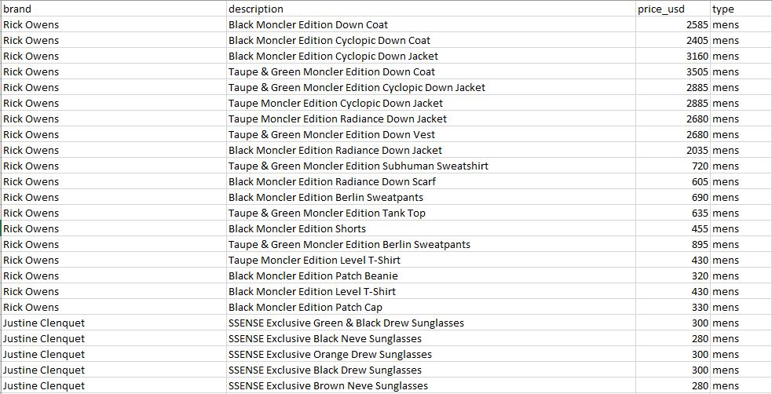
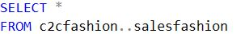
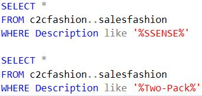
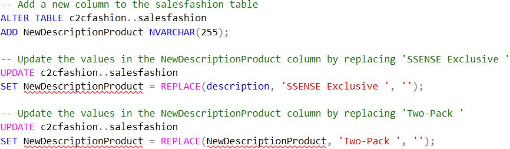
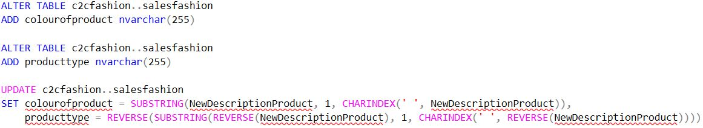
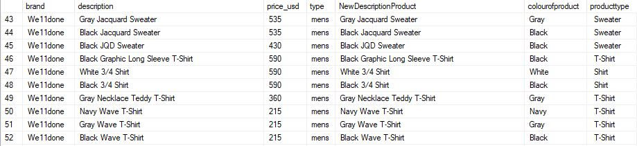
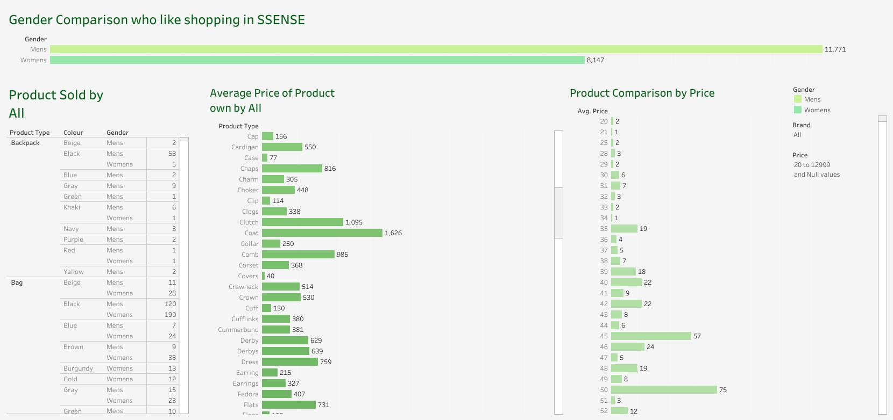

🏷️ Revitalizing Fashion Sales: A SQL Data Cleaning Odyssey with SSENSE Sales Report
Embark on a journey to enhance and revitalize fashion sales insights using SQL data cleaning techniques with the SSENSE sales report.

Embarking on a meticulous journey through the realms of SQL and data cleaning, I dive headfirst into the intricacies of Sales for Fashion at SSENSE. This is the first raw data—an uncharted landscape pulsating with details of each sale, awaiting methodical refinement. The repository on my GitHub unfolds a treasure trove of fashion transactions, revealing intricate product details, descriptions, colors, and types, all entwined in a complex tapestry. This is the snapshot of the raw data
On this quest for clarity, the initial step involves peering into the specifics of the dataset, dissecting each sale for a nuanced understanding. The unbridled potential within this raw data beckons for organization and structure, and I am poised to breathe clarity into the chaos. This is my first step
Navigating the labyrinth of fashion data from SSENSE, I delve deeper into the intricacies of product descriptions. Upon closer inspection, a pattern emerges—color details often reside at the beginning of the description, while product types linger toward the end. A eureka moment! Yet, the data harbors challenges. Enter the enigmatic phrases "SSENSE Exclusive" and "Two-Pack," lurking in the initial throes of descriptions, obstructing the pristine view of product colour. My next move involves a systematic scan, quantifying the prevalence of these hindering phrases and paving the way for a refined dataset.
In the relentless pursuit of clarity within the fashion dataset, I confront the linguistic barricades posed by phrases like "SSENSE Exclusive" and "Two-Pack" within product descriptions. The strategic move now involves liberation—freeing the descriptions from these obstructive chains. With finesse, I create a new haven—aptly named "NewDescriptionProduct"—where product descriptions can bask in unadulterated clarity, unencumbered by the overshadowing phrases. The stage is set for a pristine showcase of product types and colors.
With the creation of the "NewDescriptionProduct" sanctuary, the scene is now set for a grand spectacle of clarity. In the quest for meticulous data refinement, I embark on the next phase—unveiling the intricacies of product descriptions. I deftly navigate the linguistic landscape, carving a path to reveal the hidden treasures—colors and product types. The stage is thus adorned with two new columns, "colourofproduct" and "producttype," each embodying a nuanced facet of the fashion tapestry.
In the grand finale of this SQL symphony, the curtains rise to unveil the culminating masterpiece—the refined dataset. The meticulous craftsmanship employed in separating product descriptions into "colourofproduct" and "producttype" columns has reached its zenith. As the spotlight gleams on the final act, the dataset emerges transformed, with each row and column exuding a newfound clarity. The raw data has gracefully evolved into a structured tableau of fashion insights, ready to enthrall and enlighten.
The curtain falls on this SQL odyssey with a spectacular tableau of visualizations, each brushstroke capturing the essence of refined fashion data. Filtered by price, the dataset metamorphoses into a series of captivating insights—a symphony of trends and hues. Behold the curated panorama on my Tableau Public page, where each visualization beckons with stories untold. As the journey concludes, a heartfelt thank you resonates with those who joined in this exploration. Should you crave a deeper dive into the refined dataset or wish to traverse the visual landscapes, my GitHub and Tableau Public await your curiosity. Until our data paths cross again, thank you for being part of this analytics voyage!
